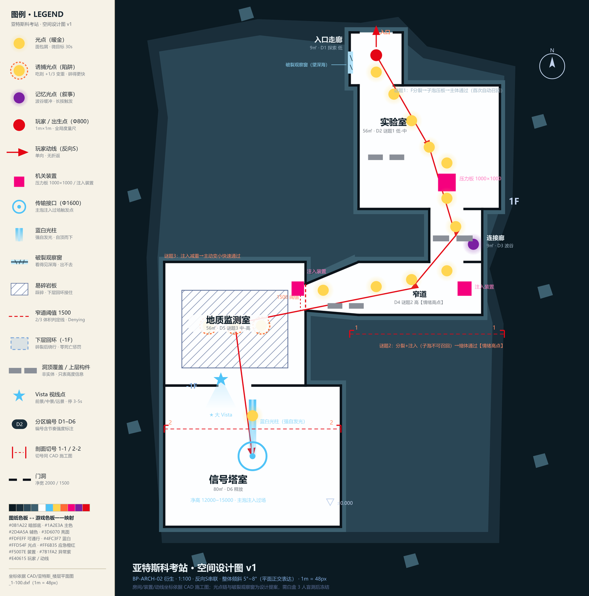
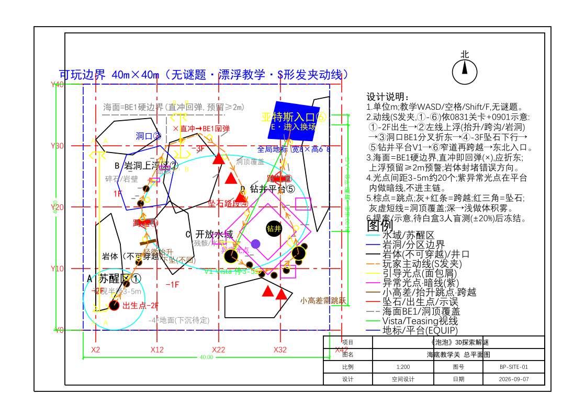
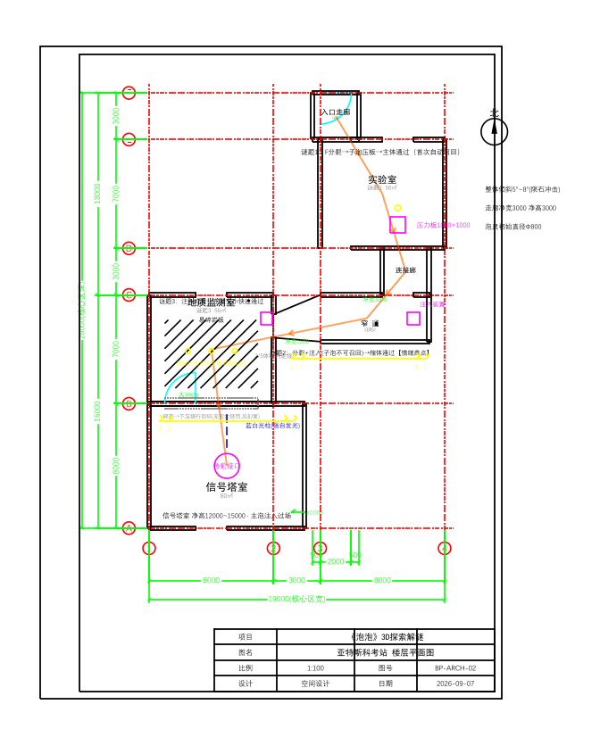
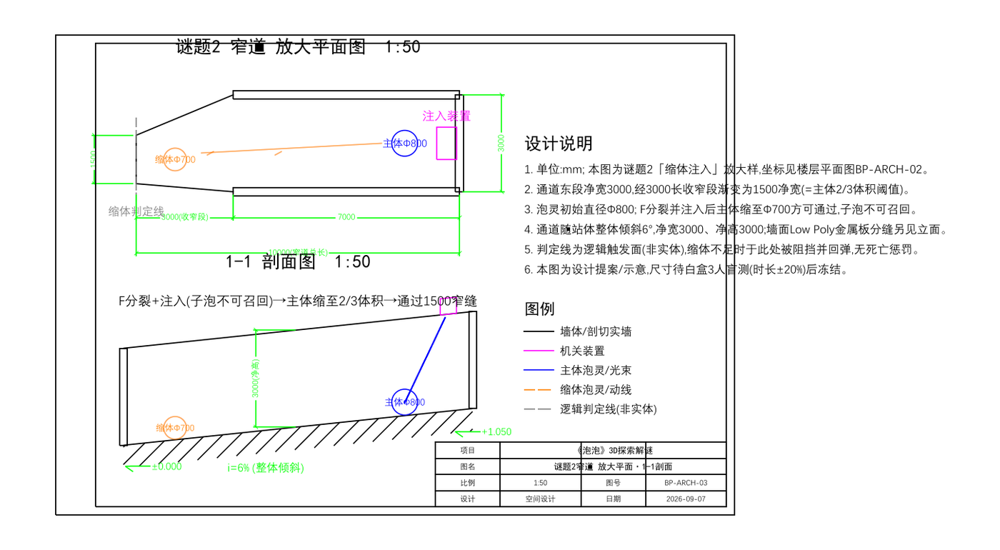
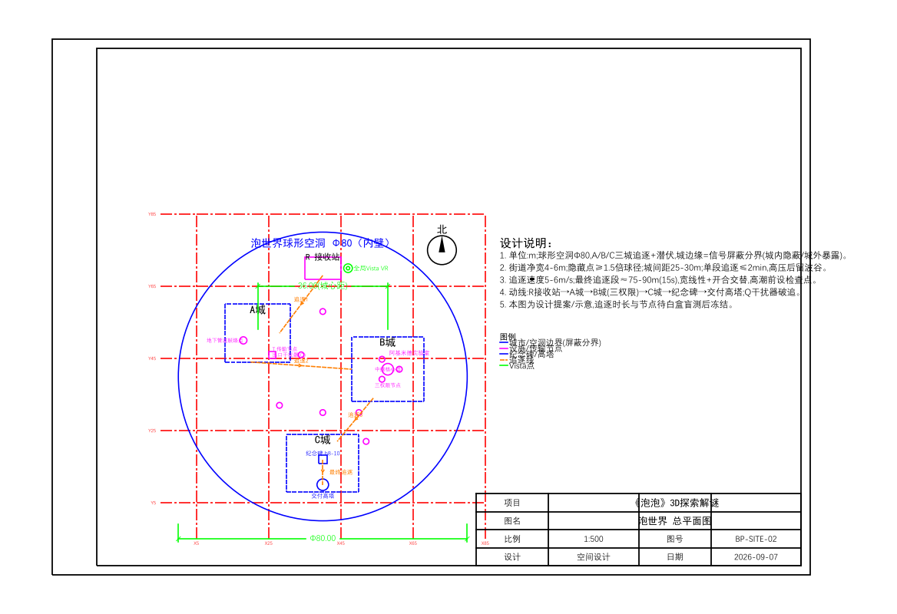
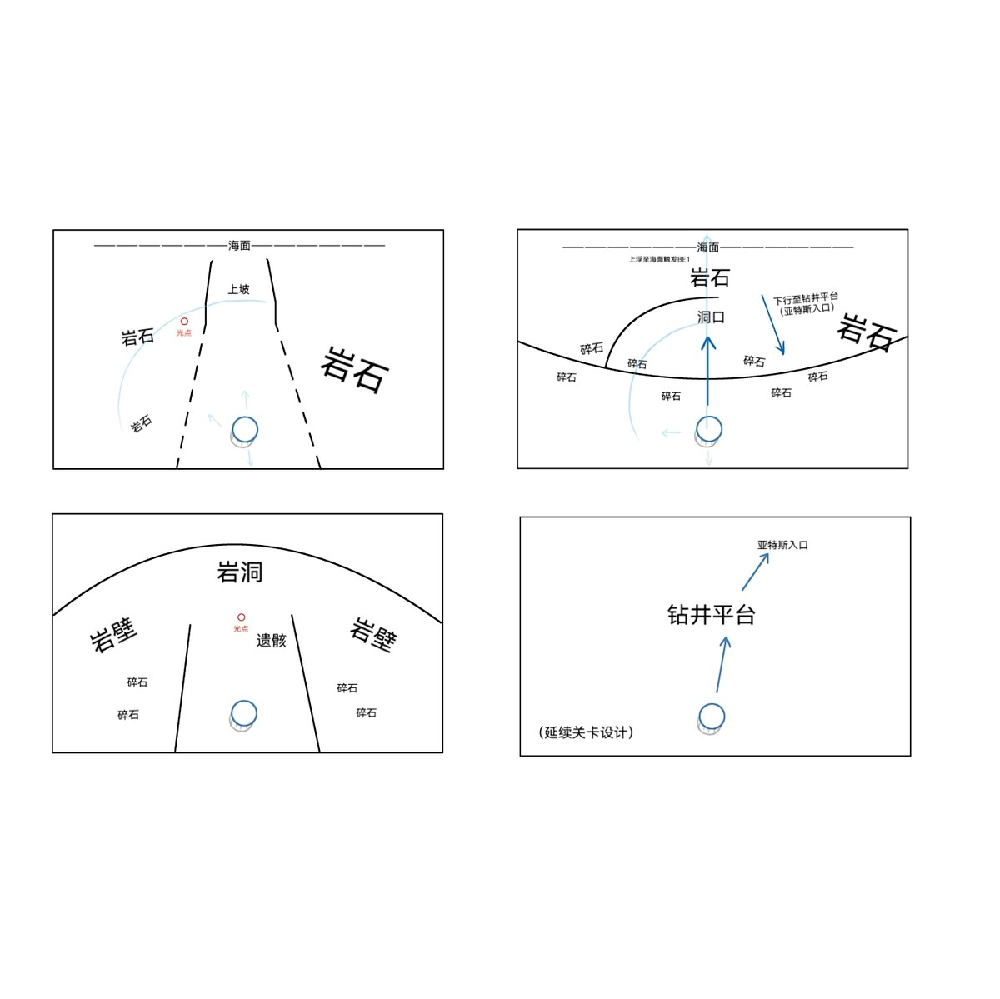
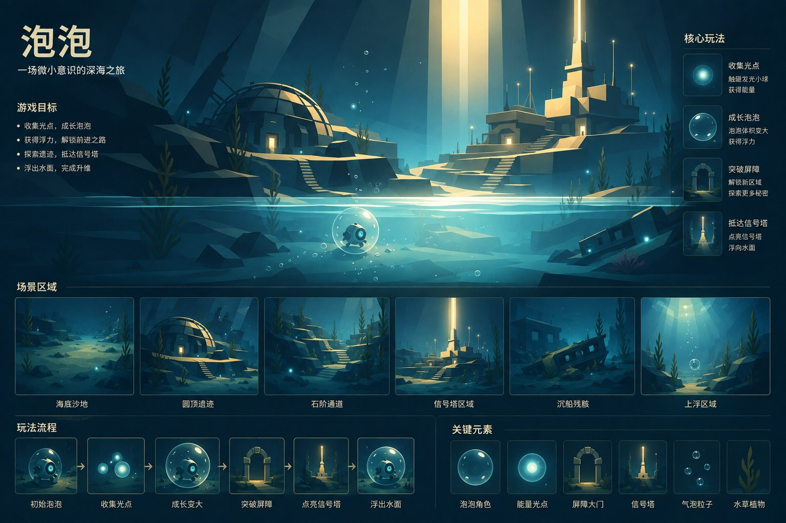
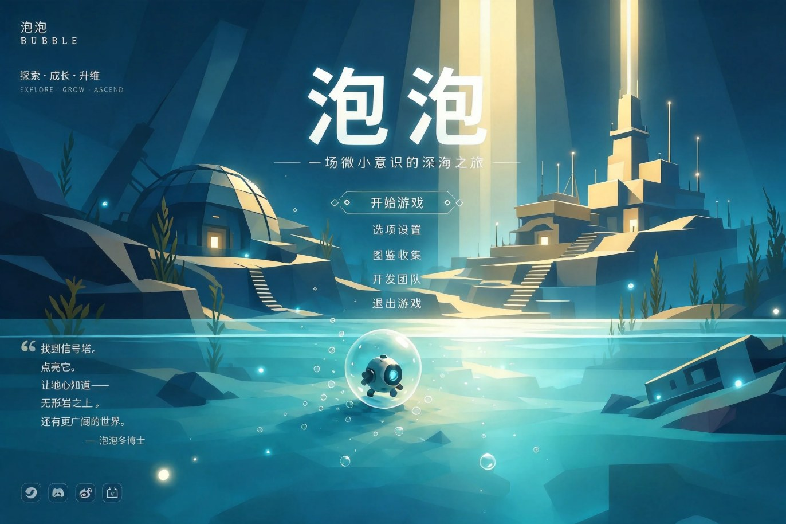
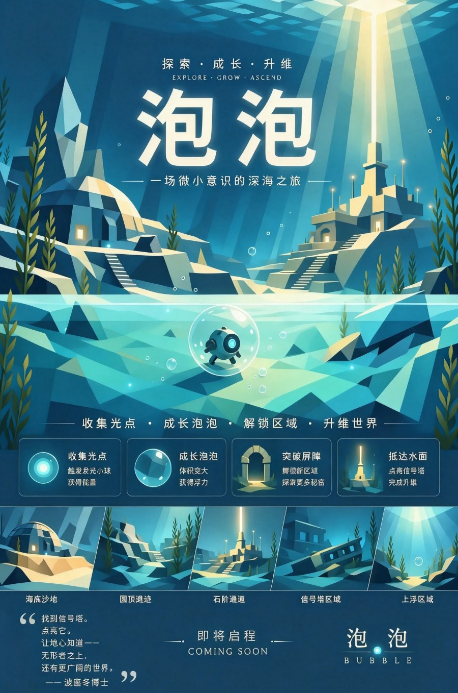
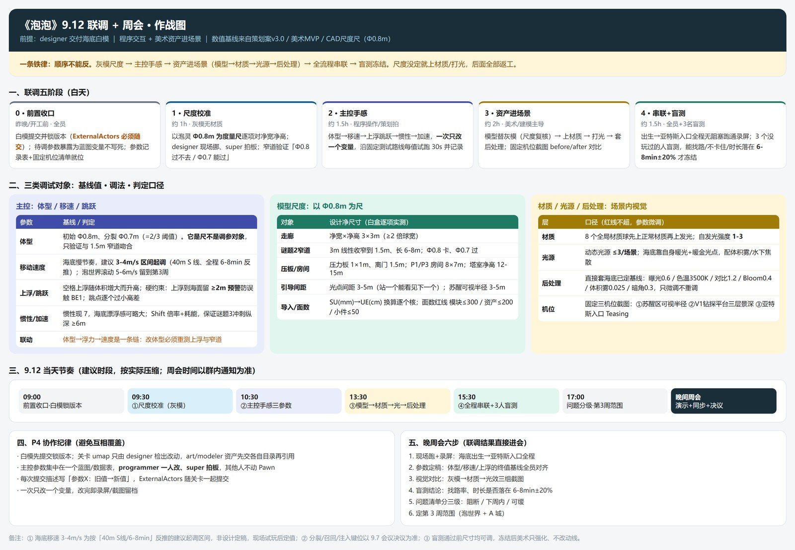

项目概览
《泡泡》是一款基于刘慈欣短篇小说《山》改编的 3D 探索解谜游戏，使用 Unreal Engine 5.8 开发。玩家扮演封装着硅基科学家波塞冬博士意识碎片的微型机器人「泡灵」，在深海废墟中苏醒，收集记忆碎片、解开科考站遗迹的谜题，最终把文明的火种传回地心。
项目由 5 人团队开发，我担任主策划 / 项目负责人，负责项目管理与排期、策划案与叙事文案、UE 工程搭建与测试打包、场景后处理与程序化自发光，并主持空间叙事走查。

一、世界观：泡世界与无形岩
宇宙深处有一颗与地球大小相仿的行星，它的地核是空的，形成一个半径约三千公里的球形空洞。在这个空洞中诞生了硅基文明——泡世界：肌肉与骨骼是金属的，大脑是超高集成度芯片，电流和磁场是血液，放射性岩块是食物。这里没有气体、没有液体、没有重力，一切悬浮在空间中。
泡世界的核心矛盾是空间守恒：挖洞不能增大空间，只能改变空间的形状与位置。整个文明史就是一部血腥的空间争夺史——探险派主张向外挖掘，寻找「密度为零的天堂」；保守派主张封死所有通道，避免「无形岩」的诅咒。
当最前沿的探险泡船钻透最后一层岩壁，涌入的不是真空而是液体——硅基生命的电路在液体中瞬间短路，第一批接触者全部丧生。泡世界把这种致命物质命名为「无形岩」。他们后来才发现：头顶那片蓝色的、流动的广阔空间，是一片覆盖整个星球表面的海洋。
泡灵计划与灾难
硅基文明在临近海底的岩床下建立了深海前沿科考站 亚特斯（Arth's Deep），与泡世界物理完全隔离，只有信号塔的电磁数据通道相连。这里最重要的研究是波塞冬博士主持的「泡灵计划」——一种通过一层薄空气泡隔绝海水、借浮力移动的微型机器人，核心能力是意识分裂。
一颗陨石坠落海面，冲击波撼动海底岩床，海水倒灌，亚特斯数分钟内被淹没。波塞冬在最后一刻启动泡灵原型机，将部分意识碎片封入其中，留下最后一道指令：「找到信号塔。点亮它。让地心知道——无形岩之上，还有更广阔的世界。」
二、核心玩法机制
《泡泡》的机制设计围绕「同一个意识，两种体量」展开。海底与亚特斯是慢节奏解谜探索（在逝者的记忆中慢慢走），泡世界则是快节奏追逐潜伏（在活人的追捕中拼命跑）。慢与快、死与生、回忆与当下，两个场景合在一起，才是完整的《泡泡》。
光点系统：正常与异常分离
光点是核心资源与叙事载体，玩法与叙事完全解耦——这一设计让「引导」和「讲故事」互不干扰：
| 维度 | 正常光点 | 异常光点 |
|---|---|---|
| 玩法作用 | 让泡泡变大 + 加速回能 | 不变大，仅加速回能 |
| 体型计算 | 计入体型控制 | 不计入，不影响泡泡大小 |
| 叙事内容 | 波塞冬本人的记忆碎片（倒叙主线） | 其他泡灵留下的数据残片（隐藏暗线） |
| 叙述视角 | 波塞冬第一人称 | 其他泡灵 / 未知来源 |
| 使用频率 | 高频，用于主线引导 | 低频，剧情补充 |
分散的剧情碎片通过「规则怪谈」形式讲述：正常光点与异常光点的规则互相矛盾，因为写下规则的人立场不同——探险派中也有保守派与激进派。玩家在不同情况下遵循不同规则，会被引向不同结局。
体型控制与意识分裂
操作一览
| 按键 | 动作 | 说明 |
|---|---|---|
| WASD | 移动 | 水世界中为泡泡漂浮移动；泡世界中为透明结构球滚动移动（有惯性） |
| 空格 | 上浮 / 弹跳 | 水世界中向上浮动（体积越大浮力越强）；泡世界中短暂跃起 |
| Shift | 加速冲刺 | 短时间提速，消耗能量 |
| F | 分裂 / 召回 / 注入 | 分裂出子泡；再按召回；子泡靠近特定装置时按 F 注入 |
| Q | 信号干扰器 | 泡世界道具，短暂屏蔽定位，争取逃跑时间 |
三、场景与关卡设计
四个场景构成一条完整的情绪曲线：从孤独苏醒，到逝者记忆中的解谜，再到活人追捕下的奔逃。技能学习遵循三段式——先体验（无谜题）→ 再使用（谜题）→ 后 call back（复用），最终在泡世界的最终追逐中所有技能一起回收，形成高潮。
| 场景 | 尺寸 | 移动方式 | 情绪主题 | 时长 |
|---|---|---|---|---|
| 海底 | 40 × 40 m | 水泡漂浮 | 孤独苏醒 · 微光探索（无谜题） | 6–8 min |
| 亚特斯 | 30 × 30 m | 水泡漂浮 | 逝者记忆 · 悬疑解谜（3 个谜题） | 12–15 min |
| 信号塔 | 独立区域 | 水泡漂浮 | 过渡 · 主泡注入（机制反转） | 过场 |
| 泡世界 | 球形空洞 Ø80 m | 透明球滚动 | 暖金释放 · 追捕潜伏（三城推进） | 25–35 min |
亚特斯：三个谜题的技能教学链
亚特斯是解谜核心，三个房间各承担一次技能教学，并在情绪上形成「三峰波浪」，谜题 2 为最高点：
- 谜题 1 · 分裂与压力板（教学）：门前压力板踩上即开门，板上方放一个光点暗示「站这里」。玩家分裂子泡停在压力板上，主体通过——首次通过后子泡自动召回不消耗，降低学习门槛。
- 谜题 2 · 狭窄通道与子泡注入（情绪高点）：通道宽度由 3 m 线性收窄到 1.5 m，初始体积过不去，形成最清晰的「负面示能」，逼出「分裂变小」。子泡注入装置后不可召回，构成一次永久代价。
- 谜题 3 · 易碎地形（机制反转）：起点旁注入装置开门并使主体减重，但易碎岩板沿途故意散布引导光点——吃了会变大、地面碎得更快，即「光点是陷阱」。玩家需要主动克制，与谜题 1、2 的「尽量吃 / 必须分裂」形成反转。
泡世界：三城推进与追逐潜伏
泡世界是 Ø80 m 的球形空洞，三座城市建筑群悬浮其中，城市之间是暴露区。玩家在城市外被实时定位（保守派泡船全速赶来），进入城市内则信号被建筑屏蔽——暴露与隐藏的切换构成了核心张力。保守派泡船分为巡逻、追击、拦截、扫描四类，配合固定扫描节点、隐藏点与市民掩护，形成阶梯式升级的潜伏压力。
空间设计图纸
为保证「视线—构图—节奏」可验证，我为三个场景建立了统一的坐标系与设计基准（泡灵初始直径 0.8 m 作为全局度量尺），并输出总平面图、楼层平面图与大样剖面，用于白盒校验与团队对齐。







四、视觉风格与美术方向
整体调性是「压抑中的微光，悲壮中的希望」。海底与亚特斯以深蓝、黑暗、工业废墟为主，情绪压抑；泡世界以暖金、淡蓝、发光城市为主，情绪释放但不欢快。整体色调克制，不使用鲜艳彩色。泡世界的建筑形态参考原著「地核中是失重的，我们的城市就悬浮在那昏暗的空间中……远看去，像一团团发光的云」。


五、技术实现
项目基于 Unreal Engine 5.8，采用 C++ 模块 + 蓝图混合开发。核心玩法由 ABubbleCharacter 与水下变体 ABubbleSwimCharacter 承载：后者通过 BeginPlay 把世界的默认物理体积转换为水体并让角色进入 MOVE_Swimming，实现「同一个 Pawn 丢进任意关卡即成水下游泳者」，与陆上变体互不干扰。
- 水下手感调参：低
MaxAcceleration+ 近零制动形成「软加速与长滑行」；中性浮力（Buoyancy = 1）配合WaterFriction控制水阻；冲刺时 FOV 推近，参考 ABZU 的爆发反馈。 - 体积驱动跳跃：
BubbleVolume作为单一数值源，同时驱动跳跃高度与浮力，使「变大 / 变小」的玩法与表现天然一致。 - 水体与粒子：UE5 Water 插件 + Niagara 气泡粒子，配合体积雾与水下焦散。
- 后处理与程序化自发光：为海底 / 亚特斯 / 泡世界各配置一套 Post Process Volume，并用自发光蓝图实现应急灯闪烁、信号塔光柱脉动、传输节点能量环旋转。
- 工具链：用 Python 脚本完成灰盒灯光、自发光后处理、游泳系统装配与设置校验，减少重复手工操作。
- 版本管理：Perforce（P4）协同，自建腾讯云部署流程与成员连接指南。
六、我的职责（主策划 / 项目负责人）
项目管理与制作
- 制定周目标与风险清单，统一需求收口；组织每周全员会议并输出结构化纪要（结论速览 / 待办清单 / 决议记录模板）
- 按《MVP 方案》划分 P0/P1/P2 范围边界，在 1 个月周期内主动砍掉性价比低的地质监测室、多城市、市民掩护等模块，保住核心体验
- 建立「模型替换灰模 → 材质 → 光源 → 后处理」的分层验收顺序，前一层不验收不进下一层
策划与叙事
- 撰写《泡泡》游戏策划案（v3.0）：世界观、核心机制、四个场景、三个谜题、结局与自由探索模式
- 设计光点玩法/叙事解耦结构与「规则怪谈」矛盾叙事；撰写记忆光点、异常光点文案
- 主持空间叙事走查，对照《叙事动线 v0.2》逐节点核查视线、构图与节奏，推动问题清单闭环
工程与实现
- 搭建 UE 工程骨架、目录规范与场景文件划分（水世界 / 泡世界），输出可运行测试 build
- 实现三套场景后处理与三个程序化自发光效果（应急灯闪烁 / 光柱脉动 / 能量环旋转）
- 编写 Python 工具脚本，覆盖灰盒灯光、自发光后处理与游泳系统装配
团队协作
5 人团队分工：主策（我） / 主程 / 关卡设计兼地编 / 空间场景设计兼建模 / 主美。项目使用 Perforce 做资产版本管理，每周六固定全员会议做进度同步与验收。作为主策，我需要在地编、建模、美术与程序之间做需求裁决与优先级排序，并在资源产出滞后时主动调整范围。

项目状态
- 2026.08.31 立项启动，完成 UE 工程搭建与目录规范
- 第 1 周 核心机制可玩 + 风格验证冻结：泡泡 Pawn 三操作、F 键分裂-召回-注入闭环、两类光点、体型与窄道判定
- 第 2 周 海底测试关卡可玩 + 空间叙事呈现验证：召回/注入、压力板开门、全流程联调、空间叙事走查
- 进行中 子泡分裂定向控制已完成，跳跃与 Shift 加速开发中；下一阶段进入泡世界白盒与潜伏逻辑
作品信息
- 作品名：泡泡（Bubble）
- 类型：3D 探索解谜 / 叙事驱动 · Unreal Engine 5.8
- 角色：主策划 / 项目负责人（5 人团队）
- 周期：2026.08 至今 · 1 个月原型阶段 + 持续迭代
- 原著：刘慈欣《山》
- 技术栈：UE 5.8 · C++ / 蓝图 · Water 插件 · Niagara · Perforce